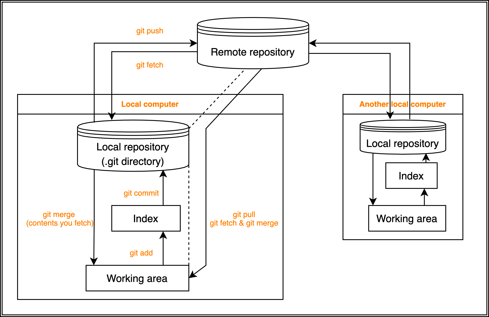

GitHub
Contents
GitHub¶
Basic¶
{kind=link}
you can learn Git/GitHub at https://www.atlassian.com/git/tutorials
Create a new repository¶
First, make a repository on GitHub website without initializing. Second, execute the commands below on your local computer
[mkdir project_name]
[cd project_name]
echo "# test" >> README.md
git init
git add .
(git add README.md)
git commit -m "first commit"
git branch -M main
git remote add origin https://github.com/<Username>/<repository>.git
git push -u origin main
git init makes repository, or .git, in current directory.
git init project_name makes a directory named project_name and .git in it.
push an existing repository from the command line¶
git remote add origin https://github.com/<Username>/<repository>.git
git branch -M main
git push -u origin main
Clone¶
In your arbitrary directory,
$ git clone [branch, or you can omit here for main] https://github.com/<Username>/<repository>.git
$ cd <repository>
After you add or modify files:
$ git add <file>
($ git add . # add current directory)
($ git status)
$ git commit -m "<comment>"
$ git push origin main
($ git status)
take new changes of remote repository into your local repository¶
$ git pull origin main
This is equivalent to
$ git fetch
$ git merge origin main
make a branch and change branches at local¶
When you make a repository, only main branch exists at first. So, you are in main branch by default.
you can check your current branch by
$ git branch
you can see all branches including remote branches by
$ git checkout -a
1, when making new branch at local (branch not in remote) Let’s make a new branch!
# make a branch
$ git branch <branch>
# switch to branch1 from main
$ git checkout <branch>
Tip
These two lines are equivalent to
$ git checkout -b <branch>
Then reflect new branch to remote repository.
$ git push origin <branch>
2, when remote/branch already exists
# create a new local branch pointing to the remote branch
$ git branch <branch> origin/<branch>
# check out that branch
$ git checkout <branch>
Tip
These two lines are equivalent to
$ git checkout -b <branch> origin/<branch>
.gitignore¶
You can configure Git to ignore files you don’t want to check in to GitHub.
All you have to do is write down filenames in .gitignore, which is in the same directory as .git.
However, making .gitignore and writing filenames in each directory in the control of Git is troublesome. You can make .gitignore easily with gitignore.io website or gitignore.io CLI
As to somefiles, you will append their filenames in evey .gitignore.
To avoid it, making ~/.gitignore_global is a solution. ~/ represents home directory.
Note
First, make ~/.gitignore_global if you haven’t made yet
install .gitignore.io from https://docs.gitignore.io/install/command-line
for macOS :
one time
$ git config --global core.excludesfile ~/.gitignore_global
$ echo "function gi() { curl -sLw "\n" https://www.toptal.com/developers/gitignore/api/\$@ ;}" >> \
~/.rc && source ~/.rc
make
.gitignore
$ gi macos,python,visualstudiocode >> ~/.gitignore_global
Refer to https://docs.github.com/en/get-started/getting-started-with-git/ignoring-files for details.
When you want to rename a repository¶
First, rename on GitHub website. Second, open the corresponding [.git->config], and [url = https://~.<rename_here>.git]
quit Git administration¶
All you have to do is remove .git directory.
remove files¶
1, remove files from repository and local directory 2, remove files from repository
$ git rm FILENAME 1
$ git rm --cached FILENAME 2
$ git commit -m "delete"; git push origin main
Invite people to my Private repository¶
GitHub CLI¶
install¶
$ brew install gh
make a new repository based on your current directory¶
$ git init; git add .
$ git commit -m "Initial commit"
$ gh repo create --private --source=. --push'